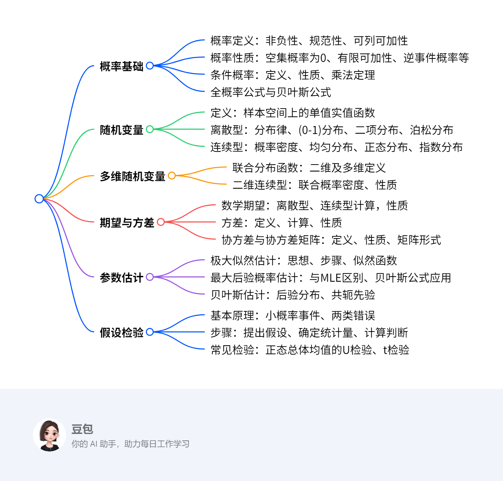

概率论与数理统计基础¶
概览¶
一段话总结¶
文档围绕概率论与数理统计展开，先介绍概率的定义、性质，条件概率及全概率公式、贝叶斯公式；接着阐述随机变量的定义，包括离散型和连续型随机变量的分布及常见分布类型；然后讲解多维随机变量及其分布、期望与方差的定义、计算及性质，还涉及协方差和协方差矩阵；最后介绍参数估计方法如极大似然估计、最大后验概率估计、贝叶斯估计，以及假设检验的基本原理、步骤和常见检验方法。
思维导图¶

详细总结¶
一、概率基础¶
- 概率的定义
对随机试验E的每一事件A，赋予实数\(P(A)\)为其概率，满足： - 非负性：\(P(A) \geq 0\)
- 规范性：必然事件\(P(S) = 1\)
-
可列可加性：两两互斥事件\(A_1, A_2, \dots\)，有\(P(\bigcup_{i=1}^\infty A_i) = \sum_{i=1}^\infty P(A_i)\)。
-
概率的性质
- \(P(\varnothing) = 0\)
- 有限可加性：\(n\)个互斥事件\(A_1, \dots, A_n\)，\(P(\bigcup_{i=1}^n A_i) = \sum_{i=1}^n P(A_i)\)
- 逆事件概率：\(P(\overline{A}) = 1 - P(A)\)
-
加法公式：任意两事件\(A, B\)，\(P(A \cup B) = P(A) + P(B) - P(AB)\)，可推广至\(n\)个事件。
-
条件概率与公式
- 定义：\(P(B|A) = \frac{P(AB)}{P(A)}\)（\(P(A) > 0\)）
- 乘法定理：\(P(AB) = P(B|A)P(A)\)，推广至\(n\)个事件链。
- 全概率公式：样本空间划分\(B_1, \dots, B_n\)，则\(P(A) = \sum_{i=1}^n P(A|B_i)P(B_i)\)。
- 贝叶斯公式：\(P(B_i|A) = \frac{P(A|B_i)P(B_i)}{\sum_{j=1}^n P(A|B_j)P(B_j)}\)。
二、随机变量¶
- 离散型随机变量
- 分布律：\(P(X = x_k) = p_k\)（\(k=1,2,\dots\)）
-
常见分布：
| 分布名称 | 记号 | 概率公式 | 期望 | 方差 | |---|---|---|---|---| | (0-1)分布 | \(X \sim B(1, p)\) | \(P(X=k) = p^k(1-p)^{1-k}\) | \(p\) | \(p(1-p)\) | | 二项分布 | \(X \sim B(n, p)\) | \(P(X=k) = C_n^k p^k(1-p)^{n-k}\) | \(np\) | \(np(1-p)\) | | 泊松分布 | \(X \sim P(\lambda)\) | \(P(X=k) = \frac{\lambda^k e^{-\lambda}}{k!}\) | \(\lambda\) | \(\lambda\) | -
连续型随机变量
- 概率密度\(p(x)\)满足：
- \(\int_{-\infty}^{+\infty} p(x)dx = 1\)
- \(P(a < X \leq b) = \int_a^b p(x)dx\)
- 常见分布：
| 分布名称 | 记号 | 概率密度 | 期望 | 方差 | |---|---|---|---|---| | 均匀分布 | \(X \sim U[a, b]\) | \(p(x) = \frac{1}{b-a}\)（\(a \leq x \leq b\)） | \(\frac{a+b}{2}\) | \(\frac{(b-a)^2}{12}\) | | 正态分布 | \(X \sim N(\mu, \sigma^2)\) | \(p(x) = \frac{1}{\sqrt{2\pi}\sigma}e^{-\frac{(x-\mu)^2}{2\sigma^2}}\) | \(\mu\) | \(\sigma^2\) | | 指数分布 | \(X \sim E(\lambda)\) | \(p(x) = \lambda e^{-\lambda x}\)（\(x \geq 0\)） | \(\frac{1}{\lambda}\) | \(\frac{1}{\lambda^2}\) |
三、多维随机变量¶
- 联合分布函数：\(F(x_1, \dots, x_n) = P(X_1 \leq x_1, \dots, X_n \leq x_n)\)。
- 二维连续型：联合概率密度\(p(x, y)\)满足\(F(x, y) = \int_{-\infty}^y \int_{-\infty}^x p(u, v)dudv\)，且\(\iint_{-\infty}^{+\infty} p(x, y)dxdy = 1\)。
四、期望与方差¶
- 数学期望
- 离散型：\(E(X) = \sum_{k=1}^\infty x_k p_k\)
- 连续型：\(E(X) = \int_{-\infty}^{+\infty} x p(x)dx\)
-
性质：\(E(C) = C\)，\(E(CX) = CE(X)\)，\(E(X+Y) = E(X)+E(Y)\)（独立时\(E(XY) = E(X)E(Y)\)）。
-
方差
- 定义：\(D(X) = E[(X-E(X))^2] = E(X^2) - [E(X)]^2\)
-
性质：\(D(C) = 0\)，\(D(CX) = C^2D(X)\)，\(D(X \pm Y) = D(X) + D(Y) \pm 2\text{Cov}(X, Y)\)（独立时\(D(X+Y) = D(X)+D(Y)\)）。
-
协方差与协方差矩阵
- 协方差：\(\text{Cov}(X, Y) = E[(X-E(X))(Y-E(Y))] = E(XY) - E(X)E(Y)\)
- 相关系数：\(\rho_{XY} = \frac{\text{Cov}(X, Y)}{\sqrt{D(X)D(Y)}}\)
- 协方差矩阵：\(n\)维随机变量\(X=(X_1, \dots, X_n)^T\)的协方差矩阵\(C\)，其中\(c_{ij} = \text{Cov}(X_i, X_j)\)，对角线为方差。
五、参数估计¶
- 极大似然估计（MLE）
- 思想：选择参数使样本出现概率最大。
-
步骤：构造似然函数\(L(\theta) = \prod_{i=1}^n p(x_i;\theta)\)，取对数求导，解方程得估计值。
-
最大后验概率估计（MAP）
-
引入先验概率\(p(\theta)\)，最大化后验概率\(p(\theta|X) \propto p(X|\theta)p(\theta)\)，适用于小样本场景。
-
贝叶斯估计
- 计算后验分布\(p(\theta|X) = \frac{p(X|\theta)p(\theta)}{p(X)}\)，取期望作为估计值，常选共轭先验简化计算。
六、假设检验¶
- 基本原理
- 基于小概率事件原理，提出原假设\(H_0\)和备择假设\(H_1\)，通过检验统计量判断拒绝或接受\(H_0\)。
-
两类错误：
- 第一类错误（弃真）：概率为显著性水平\(\alpha\)。
- 第二类错误（取伪）：概率为\(\beta\)，\(\alpha\)与\(\beta\)不能同时减小，需增大样本量。
-
正态总体均值检验
- U检验（\(\sigma^2\)已知）：
- 双边检验：\(H_0: \mu = \mu_0\)，拒绝域\(|Z| \geq z_{\alpha/2}\)，\(Z = \frac{\overline{X}-\mu_0}{\sigma/\sqrt{n}}\)。
- t检验（\(\sigma^2\)未知）：
- 双边检验：\(H_0: \mu = \mu_0\)，拒绝域\(|t| \geq t_{\alpha/2}(n-1)\)，\(t = \frac{\overline{X}-\mu_0}{S/\sqrt{n}}\)。
关键问题¶
- 问题：全概率公式与贝叶斯公式的核心区别是什么？
答案： - 全概率公式用于由因求果，通过样本空间的划分，将复杂事件概率分解为各简单事件条件概率的加权和，公式为\(P(A) = \sum_{i=1}^n P(A|B_i)P(B_i)\)。
-
贝叶斯公式用于由果溯因，在已知结果发生的情况下，反推各原因的概率，公式为\(P(B_i|A) = \frac{P(A|B_i)P(B_i)}{\sum_{j=1}^n P(A|B_j)P(B_j)}\)，体现了先验概率到后验概率的更新。
-
问题：离散型与连续型随机变量的数学期望计算有何本质差异？
答案： - 离散型随机变量的期望是加权求和，公式为\(E(X) = \sum_{k=1}^\infty x_k p_k\)，其中\(p_k\)为离散概率值。
-
连续型随机变量的期望是积分运算，公式为\(E(X) = \int_{-\infty}^{+\infty} x p(x)dx\)，其中\(p(x)\)为概率密度函数，体现了密度在实数轴上的累积效应。
-
问题：极大似然估计（MLE）与最大后验概率估计（MAP）的本质区别是什么？
答案： - MLE属于频率学派，假设参数为固定值，仅通过样本数据最大化似然函数\(L(\theta) = \prod_{i=1}^n p(x_i;\theta)\)，不考虑先验信息。
- MAP属于贝叶斯学派，将参数视为随机变量，引入先验分布\(p(\theta)\)，最大化后验概率\(p(\theta|X) \propto p(X|\theta)p(\theta)\)，适合样本量小或需融入先验知识的场景。
概率基础总结¶
一、核心概念与性质¶
1. 概率的定义（公理化定义）¶
- 三要素：
- 非负性：对任意事件 \( A \)，\( P(A) \geq 0 \)。
- 规范性：必然事件 \( S \) 的概率 \( P(S) = 1 \)。
- 可列可加性：若事件 \( A_1, A_2, \dots \) 两两互斥（即 \( A_i \cap A_j = \varnothing, i \neq j \)），则
[ P(A_1 \cup A_2 \cup \dots) = P(A_1) + P(A_2) + \dots ]
2. 概率的性质¶
- 空集概率：\( P(\varnothing) = 0 \)。
- 有限可加性：若 \( A_1, A_2, \dots, A_n \) 两两互斥，则
[ P(A_1 \cup \dots \cup A_n) = P(A_1) + \dots + P(A_n) ] - 逆事件概率：对任意事件 \( A \)，\( P(\overline{A}) = 1 - P(A) \)。
- 包含关系：若 \( A \subseteq B \)，则 \( P(B - A) = P(B) - P(A) \)，且 \( P(B) \geq P(A) \)。
- 加法公式：对任意两事件 \( A, B \)，
[ P(A \cup B) = P(A) + P(B) - P(AB) ]
推广到 \( n \) 个事件：
[ P(\bigcup_{i=1}^n A_i) = \sum_{i=1}^n P(A_i) - \sum_{1 \leq i < j \leq n} P(A_i A_j) + \dots + (-1)^{n+1} P(A_1 \dots A_n) ]
3. 条件概率¶
- 定义：设 \( P(B) > 0 \)，在事件 \( B \) 发生的条件下，事件 \( A \) 发生的概率为
[ P(A|B) = \frac{P(AB)}{P(B)} ] - 性质：
- 非负性：\( P(A|B) \geq 0 \)。
- 规范性：\( P(S|B) = 1 \)。
- 可列可加性：若 \( B_1, B_2, \dots \) 两两互斥，则
[ P(\bigcup_{i=1}^\infty B_i | A) = \sum_{i=1}^\infty P(B_i | A) ]
4. 乘法定理（链式法则）¶
- 公式：
- 两事件：若 \( P(A) > 0 \)，则 \( P(AB) = P(B|A)P(A) \)。
- \( n \) 事件：若 \( P(A_1 A_2 \dots A_{n-1}) > 0 \)，则
[ P(A_1 A_2 \dots A_n) = P(A_n | A_1 \dots A_{n-1}) \cdots P(A_2 | A_1) P(A_1) ]
二、全概率公式与贝叶斯公式¶
1. 样本空间的划分¶
- 定义：若事件 \( B_1, B_2, \dots, B_n \) 满足：
- 两两互斥：\( B_i \cap B_j = \varnothing \ (i \neq j) \)。
- 覆盖样本空间：\( B_1 \cup \dots \cup B_n = S \)。
则称 \( B_1, \dots, B_n \) 为样本空间 \( S \) 的一个划分。
2. 全概率公式¶
- 公式：若 \( B_1, \dots, B_n \) 是样本空间的划分，且 \( P(B_i) > 0 \)，则对任意事件 \( A \)，
[ P(A) = \sum_{i=1}^n P(A|B_i) P(B_i) ] - 本质：将复杂事件 \( A \) 的概率分解为多个简单事件 \( B_i \) 条件下的概率加权和，用于由因求果。
3. 贝叶斯公式¶
- 公式：在全概率公式条件下，有
[ P(B_i | A) = \frac{P(A|B_i) P(B_i)}{\sum_{j=1}^n P(A|B_j) P(B_j)} ] - 本质：已知结果 \( A \) 发生，反推各原因 \( B_i \) 的概率，用于由果溯因，体现先验概率到后验概率的更新。
三、求解方法与示例¶
1. 条件概率求解方法¶
步骤：
1. 确定样本空间 \( S \) 和事件 \( A, B \)。
2. 计算 \( P(AB) \) 和 \( P(B) \)。
3. 代入公式 \( P(A|B) = \frac{P(AB)}{P(B)} \)。
示例：
一袋中有 3 红球、2 白球，不放回摸球两次。设 \( A = \{\text{第二次摸到红球}\} \)，\( B = \{\text{第一次摸到白球}\} \)，求 \( P(A|B) \)。
解：
- \( P(B) = \frac{2}{5} \)（第一次摸白球的概率）。
- \( P(AB) = \frac{2}{5} \times \frac{3}{4} = \frac{3}{10} \)（第一次白球且第二次红球的概率）。
- \( P(A|B) = \frac{P(AB)}{P(B)} = \frac{3/10}{2/5} = \frac{3}{4} \)。
2. 全概率公式求解方法¶
步骤：
1. 确定样本空间的划分 \( B_1, \dots, B_n \)。
2. 计算各 \( P(B_i) \) 和条件概率 \( P(A|B_i) \)。
3. 代入公式 \( P(A) = \sum P(A|B_i) P(B_i) \)。
示例：
某工厂有三条生产线，产量分别占 20%、30%、50%，次品率分别为 5%、4%、2%。求随机抽取一件产品为次品的概率。
解：
- 设 \( B_1, B_2, B_3 \) 表示产品来自三条生产线，\( A = \{\text{次品}\} \)。
- \( P(B_1) = 0.2 \)，\( P(B_2) = 0.3 \)，\( P(B_3) = 0.5 \)。
- \( P(A|B_1) = 0.05 \)，\( P(A|B_2) = 0.04 \)，\( P(A|B_3) = 0.02 \)。
- 全概率公式：
[
P(A) = 0.2 \times 0.05 + 0.3 \times 0.04 + 0.5 \times 0.02 = 0.032
]
3. 贝叶斯公式求解方法¶
步骤：
1. 利用全概率公式计算 \( P(A) \)。
2. 对目标原因 \( B_i \)，计算 \( P(A|B_i) P(B_i) \)。
3. 代入贝叶斯公式 \( P(B_i|A) = \frac{P(A|B_i) P(B_i)}{P(A)} \)。
示例（续上例）：若抽到一件次品，求其来自第一条生产线的概率。
解：
- 已求得 \( P(A) = 0.032 \)。
- \( P(B_1|A) = \frac{P(A|B_1) P(B_1)}{P(A)} = \frac{0.05 \times 0.2}{0.032} = \frac{0.01}{0.032} = \frac{5}{16} \)。
四、重点总结¶
- 核心公式：加法公式、条件概率、全概率公式、贝叶斯公式。
- 关键思想：
- 全概率公式通过划分样本空间，将复杂事件分解为简单事件的组合。
- 贝叶斯公式结合先验概率与观测数据，更新对事件发生原因的信念。
- 应用场景：
- 全概率公式适用于多路径导致某结果的概率计算（如可靠性分析）。
- 贝叶斯公式适用于逆概率推断（如医学诊断、机器学习中的分类问题）。
概率的性质、条件概率及相关公式总结¶
一、核心概念与公式¶
1. 概率的性质（多事件推广）¶
- 加法公式推广：
对于任意三个事件 \(A_1, A_2, A_3\)，有
[ P(A_1 \cup A_2 \cup A_3) = P(A_1) + P(A_2) + P(A_3) - P(A_1A_2) - P(A_1A_3) - P(A_2A_3) + P(A_1A_2A_3) ]
n 个事件推广：
[ P\left(\bigcup_{i=1}^n A_i\right) = \sum_{i=1}^n P(A_i) - \sum_{1 \leq i < j \leq n} P(A_iA_j) + \sum_{1 \leq i < j < k \leq n} P(A_iA_jA_k) - \dots + (-1)^{n+1}P(A_1A_2\cdots A_n) ]
本质：通过容斥原理逐步加减交集概率，避免重复计算。
2. 条件概率¶
- 定义：在事件 \(B\) 发生的条件下，事件 \(A\) 发生的概率为
[ P(A|B) = \frac{P(AB)}{P(B)} \quad (P(B) > 0) ] - 性质：
- 非负性：\(P(A|B) \geq 0\)；
- 规范性：\(P(S|B) = 1\)（\(S\) 为必然事件）；
- 可列可加性：若 \(B_1, B_2, \dots\) 两两互斥，则
[ P\left(\bigcup_{i=1}^\infty B_i \bigg| A\right) = \sum_{i=1}^\infty P(B_i|A) ]
3. 乘法定理（链式法则）¶
- 两事件：\(P(AB) = P(A|B)P(B) = P(B|A)P(A)\)（需 \(P(A), P(B) > 0\)）。
- 多事件：对于 \(n\) 个事件 \(A_1, A_2, \dots, A_n\)，若 \(P(A_1A_2\cdots A_{n-1}) > 0\)，则
[ P(A_1A_2\cdots A_n) = P(A_n|A_1A_2\cdots A_{n-1}) \cdot P(A_{n-1}|A_1\cdots A_{n-2}) \cdots P(A_2|A_1) \cdot P(A_1) ]
4. 全概率公式与贝叶斯公式¶
- 样本空间划分：
若事件 \(B_1, B_2, \dots, B_n\) 满足： - 两两互斥（\(B_i \cap B_j = \varnothing, i \neq j\)）；
-
覆盖样本空间（\(B_1 \cup B_2 \cup \dots \cup B_n = S\)），
则称其为样本空间 \(S\) 的一个划分。 -
全概率公式：
[ P(A) = \sum_{i=1}^n P(A|B_i)P(B_i) ]
作用：将复杂事件 \(A\) 的概率分解为多个简单事件 \(B_i\) 条件下的概率加权和（由因求果）。 -
贝叶斯公式：
[ P(B_i|A) = \frac{P(A|B_i)P(B_i)}{\sum_{j=1}^n P(A|B_j)P(B_j)} ]
作用：已知结果 \(A\) 发生，反推各原因 \(B_i\) 的概率（由果溯因），需结合先验概率 \(P(B_i)\)。
二、求解方法与示例¶
1. 条件概率与乘法定理求解¶
方法步骤：
1. 确定目标事件 \(A\) 和条件事件 \(B\)；
2. 计算 \(P(AB)\) 和 \(P(B)\)（或 \(P(A)\)）；
3. 代入公式 \(P(A|B) = \frac{P(AB)}{P(B)}\) 或 \(P(AB) = P(A|B)P(B)\)。
示例：
盒中有 2 红 3 蓝球，不放回摸球两次。求：
（1）第一次摸到红球（事件 \(A\)）的条件下，第二次摸到蓝球（事件 \(B\)）的概率；
（2）两次都摸到红球的概率。
解：
（1）\(P(A) = \frac{2}{5}\)，\(P(AB) = \frac{2}{5} \times \frac{3}{4} = \frac{3}{10}\)，
[
P(B|A) = \frac{P(AB)}{P(A)} = \frac{3/10}{2/5} = \frac{3}{4}
]
（2）两次都红球为事件 \(AB'\)（\(B'\) 为第二次红球），
[
P(AB') = P(A) \cdot P(B'|A) = \frac{2}{5} \times \frac{1}{4} = \frac{1}{10}
]
2. 全概率公式求解¶
方法步骤：
1. 确定样本空间的划分 \(B_1, B_2, \dots, B_n\)；
2. 计算各划分的概率 \(P(B_i)\) 和条件概率 \(P(A|B_i)\)；
3. 代入公式 \(P(A) = \sum_{i=1}^n P(A|B_i)P(B_i)\)。
示例：
某工厂有三条生产线，产量占比分别为 30%、50%、20%，次品率分别为 4%、3%、5%。求随机抽取一件产品为次品（事件 \(A\)）的概率。
解：
- 划分 \(B_1, B_2, B_3\) 表示产品来自三条生产线，
\(P(B_1) = 0.3\)，\(P(B_2) = 0.5\)，\(P(B_3) = 0.2\)；
- \(P(A|B_1) = 0.04\)，\(P(A|B_2) = 0.03\)，\(P(A|B_3) = 0.05\)；
- 全概率公式：
[
P(A) = 0.3 \times 0.04 + 0.5 \times 0.03 + 0.2 \times 0.05 = 0.037
]
3. 贝叶斯公式求解¶
方法步骤：
1. 用全概率公式计算 \(P(A)\)；
2. 对目标原因 \(B_i\)，计算 \(P(A|B_i)P(B_i)\)；
3. 代入公式 \(P(B_i|A) = \frac{P(A|B_i)P(B_i)}{P(A)}\)。
示例（续上例）：若抽到次品，求其来自第二条生产线（事件 \(B_2\)）的概率。
解：
- 已求得 \(P(A) = 0.037\)；
- \(P(B_2|A) = \frac{P(A|B_2)P(B_2)}{P(A)} = \frac{0.03 \times 0.5}{0.037} \approx 0.4054\)（即 40.54%）。
三、重点总结¶
- 核心公式：
- 加法公式（容斥原理）、条件概率、乘法定理；
- 全概率公式（由因求果）、贝叶斯公式（由果溯因）。
- 关键思想：
- 条件概率体现事件依赖关系；
- 全概率公式通过分解样本空间简化计算；
- 贝叶斯公式结合先验概率与观测数据更新推断。
- 应用场景：
- 全概率公式：风险分析、可靠性评估；
- 贝叶斯公式：医学诊断、机器学习分类、逆概率问题。
随机变量及其分布总结¶
一、核心概念与分类¶
1. 随机变量的定义¶
- 定义：设随机试验的样本空间为 \( S = \{e\} \)，若存在单值实值函数 \( X = X(e) \)，将样本点 \( e \) 映射为实数，则称 \( X \) 为随机变量。
- 本质：将随机试验的结果数值化，便于用数学工具分析（如概率、期望等）。
- 图示：样本点 \( e \in S \) 通过 \( X(e) \) 与实数轴 \( R \) 建立对应关系（如 \( e_1 \to X(e_1) \)）。
2. 离散型随机变量¶
- 定义：随机变量 \( X \) 的可能取值为有限个或可列无限个（如 \( x_1, x_2, \dots \)）。
- 分布律：
- 定义：\( P(X = x_k) = p_k \)（\( k = 1, 2, \dots \)），满足 \( p_k \geq 0 \) 且 \( \sum_{k=1}^\infty p_k = 1 \)。
- 常见分布：
- (0-1) 分布：\( P(X = k) = p^k(1-p)^{1-k} \)（\( k = 0, 1 \)），用于描述二分类问题（如抛硬币）。
- 二项分布：\( P(X = k) = C_n^k p^k(1-p)^{n-k} \)（\( k = 0, 1, \dots, n \)），表示 \( n \) 次独立试验中成功 \( k \) 次的概率。
- 泊松分布：\( P(X = k) = \frac{\lambda^k e^{-\lambda}}{k!} \)（\( k = 0, 1, \dots \)），用于描述单位时间内随机事件的发生次数（如客服中心来电数）。
3. 连续型随机变量¶
- 定义：存在非负可积函数 \( p(x) \)（概率密度函数），使得分布函数 \( F(x) = \int_{-\infty}^x p(t)dt \)。
- 概率密度的性质：
- 非负性：\( p(x) \geq 0 \)。
- 规范性：\( \int_{-\infty}^{+\infty} p(x)dx = 1 \)。
- 概率计算：\( P(a < X \leq b) = F(b) - F(a) = \int_a^b p(x)dx \)。
- 单点概率：\( P(X = c) = 0 \)（连续型变量在单点的概率为零）。
- 常见分布：
- 均匀分布 \( X \sim U[a, b] \)：
[ p(x) = \begin{cases} \frac{1}{b-a}, & a \leq x \leq b \ 0, & \text{其他} \end{cases} ]
表示变量在区间 \([a, b]\) 内等概率取值（如随机数生成）。 - 正态分布 \( X \sim N(\mu, \sigma^2) \)：
[ p(x) = \frac{1}{\sqrt{2\pi}\sigma} e{-\frac{(x-\mu)2}{2\sigma^2}} ]
最常见的分布，描述自然现象中的误差或群体特征（如身高、体重）。 - 指数分布 \( X \sim E(\lambda) \)：
[ p(x) = \begin{cases} \lambda e^{-\lambda x}, & x \geq 0 \ 0, & x < 0 \end{cases} ]
用于描述随机事件的间隔时间（如设备故障时间）。
4. 多维随机变量（以二维为例）¶
- 联合分布函数：
[ F(x, y) = P(X \leq x, Y \leq y) ]
表示随机点 \((X, Y)\) 落在区域 \((-\infty, x] \times (-\infty, y]\) 内的概率。 - 二维连续型随机变量：
- 存在联合概率密度 \( p(x, y) \)，满足：
[ F(x, y) = \int_{-\infty}^y \int_{-\infty}^x p(u, v)dudv ] - 性质：
- \( p(x, y) \geq 0 \)；
- \( \int_{-\infty}^{+\infty} \int_{-\infty}^{+\infty} p(x, y)dxdy = 1 \)；
- \( P((X, Y) \in G) = \iint_G p(x, y)dxdy \)（\( G \) 为平面区域）。
二、求解方法与示例¶
1. 离散型随机变量：分布律计算¶
方法步骤：
1. 确定 \( X \) 的所有可能取值 \( x_k \)；
2. 计算每个取值的概率 \( p_k = P(X = x_k) \)；
3. 验证 \( \sum p_k = 1 \)。
示例：抛一枚均匀硬币两次，设 \( X \) 为正面朝上的次数，求 \( X \) 的分布律。
解：
- \( X \) 可能取值：0, 1, 2。
- 概率计算：
- \( P(X=0) = P(\text{反反}) = \frac{1}{2} \times \frac{1}{2} = \frac{1}{4} \)；
- \( P(X=1) = P(\text{正反}) + P(\text{反正}) = 2 \times \frac{1}{2} \times \frac{1}{2} = \frac{1}{2} \)；
- \( P(X=2) = P(\text{正正}) = \frac{1}{2} \times \frac{1}{2} = \frac{1}{4} \)。
- 分布律：
[
\begin{array}{c|c|c|c}
X & 0 & 1 & 2 \
\hline
p_k & \frac{1}{4} & \frac{1}{2} & \frac{1}{4} \
\end{array}
]
2. 连续型随机变量：概率密度与分布函数¶
方法步骤：
- 已知 \( p(x) \) 求概率：计算 \( P(a < X \leq b) = \int_a^b p(x)dx \)。
- 已知 \( F(x) \) 求 \( p(x) \)：对 \( F(x) \) 求导，即 \( p(x) = F'(x) \)（在 \( p(x) \) 连续点处）。
示例：设 \( X \sim U[0, 5] \)，求 \( P(1 < X < 3) \)。
解：
- 概率密度：\( p(x) = \begin{cases}
\frac{1}{5}, & 0 \leq x \leq 5 \\
0, & \text{其他}
\end{cases} \)
- 概率计算：
[
P(1 < X < 3) = \int_1^3 \frac{1}{5}dx = \frac{1}{5} \times (3 - 1) = \frac{2}{5}
]
3. 二维连续型随机变量：联合概率计算¶
方法步骤：
1. 确定联合概率密度 \( p(x, y) \)；
2. 设定目标区域 \( G \)（如矩形、圆形等）；
3. 计算二重积分 \( P((X, Y) \in G) = \iint_G p(x, y)dxdy \)。
示例：设二维随机变量 \((X, Y)\) 的联合概率密度为
[
p(x, y) = \begin{cases}
2e^{-x-2y}, & x > 0, y > 0 \
0, & \text{其他}
\end{cases}
]
求 \( P(X \leq 1, Y \leq 1) \)。
解：
- 目标区域：\( G = \{ (x, y) | 0 < x \leq 1, 0 < y \leq 1 \} \)
- 概率计算：
[
P(X \leq 1, Y \leq 1) = \int_0^1 \int_0^1 2e^{-x-2y}dydx = 2 \left( \int_0^1 e^{-x}dx \right) \left( \int_0^1 e^{-2y}dy \right)
]
- 计算内层积分：
[
\int_0^1 e^{-2y}dy = \left[ -\frac{1}{2}e^{-2y} \right]_0^1 = \frac{1 - e^{-2}}{2}
]
- 计算外层积分：
[
\int_0^1 e^{-x}dx = \left[ -e^{-x} \right]_0^1 = 1 - e^{-1}
]
- 最终结果：
[
P(X \leq 1, Y \leq 1) = 2 \times (1 - e^{-1}) \times \frac{1 - e^{-2}}{2} = (1 - e^{-1})(1 - e^{-2})
]
三、重点总结¶
- 核心分类：
- 离散型：用分布律 \( P(X = x_k) = p_k \) 描述，常见分布包括 (0-1) 分布、二项分布、泊松分布。
- 连续型：用概率密度 \( p(x) \) 和分布函数 \( F(x) \) 描述，常见分布包括均匀分布、正态分布、指数分布。
- 关键思想：
- 离散型变量通过求和计算概率，连续型变量通过积分计算概率；
- 多维变量需用联合分布描述变量间的依赖关系。
- 应用场景：
- 离散型：分类问题、计数问题（如产品合格数）；
- 连续型：测量数据、自然现象建模（如温度、时间）；
- 多维变量：联合分析（如身高与体重的相关性）。
期望与方差总结¶
一、核心概念与公式¶
1. 数学期望（均值）¶
- 定义：
- 离散型：若随机变量 \(X\) 的分布律为 \(P(X=x_k)=p_k\)（\(k=1,2,\dots\)），且级数 \(\sum_{k=1}^\infty x_k p_k\) 绝对收敛，则
[ E(X) = \sum_{k=1}^\infty x_k p_k ] - 连续型：若 \(X\) 的概率密度为 \(f(x)\)，且积分 \(\int_{-\infty}^{+\infty} x f(x)dx\) 绝对收敛，则
[ E(X) = \int_{-\infty}^{+\infty} x f(x)dx ] - 性质：
- 常数性：\(E(C) = C\)（\(C\) 为常数）。
- 线性性：\(E(CX) = CE(X)\)，\(E(X+Y) = E(X)+E(Y)\)（可推广至有限个变量）。
-
独立性：若 \(X, Y\) 独立，则 \(E(XY) = E(X)E(Y)\)（可推广至有限个独立变量）。
-
常见分布的期望：
| 分布 | 期望 \(E(X)\) |
|---|---|
| (0-1) 分布 \(X \sim B(1, p)\) | \(p\) |
| 二项分布 \(X \sim B(n, p)\) | \(np\) |
| 泊松分布 \(X \sim P(\lambda)\) | \(\lambda\) |
| 几何分布 \(X \sim \text{Geom}(p)\) | \(\frac{1}{p}\) |
| 均匀分布 \(X \sim U[a, b]\) | \(\frac{a+b}{2}\) |
| 正态分布 \(X \sim N(\mu, \sigma^2)\) | \(\mu\) |
| 指数分布 \(X \sim E(\lambda)\) | \(\frac{1}{\lambda}\) |
2. 方差¶
- 定义：
随机变量 \(X\) 与期望 \(E(X)\) 的偏离程度，记为 \(D(X)\) 或 \(\text{Var}(X)\)，
[ D(X) = E\left[(X-E(X))^2\right] = E(X^2) - [E(X)]^2 ] - 离散型：\(D(X) = \sum_{k=1}^\infty [x_k - E(X)]^2 p_k\)
-
连续型：\(D(X) = \int_{-\infty}^{+\infty} [x - E(X)]^2 f(x)dx\)
-
性质：
- 常数性：\(D(C) = 0\)（\(C\) 为常数）。
- 线性性：\(D(CX) = C^2 D(X)\)，\(D(X+C) = D(X)\)。
-
和差公式：\(D(X \pm Y) = D(X) + D(Y) \pm 2\text{Cov}(X, Y)\)，若 \(X, Y\) 独立，则 \(D(X \pm Y) = D(X) + D(Y)\)。
-
常见分布的方差：
| 分布 | 方差 \(D(X)\) |
|---|---|
| (0-1) 分布 \(X \sim B(1, p)\) | \(p(1-p)\) |
| 二项分布 \(X \sim B(n, p)\) | \(np(1-p)\) |
| 泊松分布 \(X \sim P(\lambda)\) | \(\lambda\) |
| 几何分布 \(X \sim \text{Geom}(p)\) | \(\frac{1-p}{p^2}\) |
| 均匀分布 \(X \sim U[a, b]\) | \(\frac{(b-a)^2}{12}\) |
| 正态分布 \(X \sim N(\mu, \sigma^2)\) | \(\sigma^2\) |
| 指数分布 \(X \sim E(\lambda)\) | \(\frac{1}{\lambda^2}\) |
3. 协方差与相关系数¶
- 协方差：
[ \text{Cov}(X, Y) = E\left[(X-E(X))(Y-E(Y))\right] = E(XY) - E(X)E(Y) ] -
性质：
- \(\text{Cov}(X, Y) = \text{Cov}(Y, X)\)
- \(\text{Cov}(aX, bY) = ab\text{Cov}(X, Y)\)（\(a, b\) 为常数）
- \(\text{Cov}(X_1+X_2, Y) = \text{Cov}(X_1, Y) + \text{Cov}(X_2, Y)\)
-
相关系数：
[ \rho_{XY} = \frac{\text{Cov}(X, Y)}{\sqrt{D(X)D(Y)}} ] - 意义：衡量 \(X, Y\) 的线性相关程度，\(|\rho_{XY}| \leq 1\)，\(\rho_{XY}=0\) 表示不相关。
4. 协方差矩阵¶
- 定义：对于 \(n\) 维随机向量 \(X = (X_1, X_2, \dots, X_n)^T\)，其协方差矩阵为 \(n \times n\) 矩阵 \(C\)，其中
[ C_{ij} = \text{Cov}(X_i, X_j), \quad C_{ii} = D(X_i) ] - 性质：对称半正定矩阵，即 \(x^T C x \geq 0\) 对任意向量 \(x\) 成立。
二、求解方法与示例¶
1. 期望的计算¶
方法步骤：
- 离散型：确定分布律 \(p_k\)，代入公式 \(E(X) = \sum x_k p_k\)。
- 连续型：确定概率密度 \(f(x)\)，代入公式 \(E(X) = \int x f(x)dx\)。
- 函数的期望：若 \(Y = g(X)\)，则 \(E(Y) = \sum g(x_k)p_k\)（离散型）或 \(E(Y) = \int g(x)f(x)dx\)（连续型）。
示例：
设随机变量 \(X\) 服从参数为 \(\lambda=2\) 的泊松分布，求 \(E(X^2)\)。
解：
- 已知 \(E(X) = \lambda = 2\)，\(D(X) = \lambda = 2\)。
- 利用方差公式 \(D(X) = E(X^2) - [E(X)]^2\)，得
[
E(X^2) = D(X) + [E(X)]^2 = 2 + 2^2 = 6
]
2. 方差的计算¶
方法步骤：
1. 计算 \(E(X)\)；
2. 利用定义式或公式 \(D(X) = E(X^2) - [E(X)]^2\) 计算方差。
示例：
掷一枚均匀骰子，设 \(X\) 为点数，求 \(D(X)\)。
解：
- \(X\) 的分布律：\(P(X=k) = \frac{1}{6}\)（\(k=1,2,\dots,6\)）。
- 计算期望：
[
E(X) = \frac{1+2+3+4+5+6}{6} = 3.5
]
- 计算 \(E(X^2)\)：
[
E(X^2) = \frac{1^2 + 2^2 + 3^2 + 4^2 + 5^2 + 6^2}{6} = \frac{91}{6} \approx 15.1667
]
- 方差：
[
D(X) = E(X^2) - [E(X)]^2 = \frac{91}{6} - (3.5)^2 = \frac{35}{12} \approx 2.9167
]
3. 协方差与相关系数的计算¶
方法步骤：
1. 计算 \(E(X)\)、\(E(Y)\)、\(E(XY)\)；
2. 代入协方差公式 \(\text{Cov}(X, Y) = E(XY) - E(X)E(Y)\)；
3. 计算 \(D(X)\)、\(D(Y)\)，代入相关系数公式 \(\rho_{XY} = \frac{\text{Cov}(X, Y)}{\sqrt{D(X)D(Y)}}\)。
示例：
设二维随机变量 \((X, Y)\) 的联合概率密度为
[
f(x, y) = \begin{cases}
2, & 0 \leq x \leq 1, 0 \leq y \leq x \
0, & \text{其他}
\end{cases}
]
求 \(\text{Cov}(X, Y)\) 和 \(\rho_{XY}\)。
解：
1. 计算 \(E(X)\)、\(E(Y)\)：
[
E(X) = \int_0^1 \int_0^x x \cdot 2 dy dx = \int_0^1 2x^2 dx = \frac{2}{3}
]
[
E(Y) = \int_0^1 \int_0^x y \cdot 2 dy dx = \int_0^1 x^2 dx = \frac{1}{3}
]
2. 计算 \(E(XY)\)：
[
E(XY) = \int_0^1 \int_0^x xy \cdot 2 dy dx = \int_0^1 x \cdot \left[\frac{2y2}{2}\right]_0x dx = \int_0^1 x^3 dx = \frac{1}{4}
]
3. 协方差：
[
\text{Cov}(X, Y) = \frac{1}{4} - \frac{2}{3} \times \frac{1}{3} = \frac{1}{4} - \frac{2}{9} = \frac{1}{36}
]
4. 计算 \(D(X)\)、\(D(Y)\)：
[
E(X^2) = \int_0^1 \int_0^x x^2 \cdot 2 dy dx = \int_0^1 2x^3 dx = \frac{1}{2}, \quad D(X) = \frac{1}{2} - \left(\frac{2}{3}\right)^2 = \frac{1}{18}
]
[
E(Y^2) = \int_0^1 \int_0^x y^2 \cdot 2 dy dx = \int_0^1 \frac{2x^3}{3} dx = \frac{1}{6}, \quad D(Y) = \frac{1}{6} - \left(\frac{1}{3}\right)^2 = \frac{1}{18}
]
5. 相关系数：
[
\rho_{XY} = \frac{\frac{1}{36}}{\sqrt{\frac{1}{18} \times \frac{1}{18}}} = \frac{\frac{1}{36}}{\frac{1}{18}} = \frac{1}{2}
]
三、重点总结¶
- 核心公式：
- 期望 \(E(X)\)、方差 \(D(X)\)、协方差 \(\text{Cov}(X, Y)\) 的定义与性质；
- 方差公式 \(D(X) = E(X^2) - [E(X)]^2\)；
-
协方差矩阵的对称性与半正定性。
-
关键思想：
- 期望是随机变量的加权平均，方差衡量取值的分散程度，协方差反映变量间的线性关联；
-
独立性可简化期望与方差的计算（如 \(E(XY)=E(X)E(Y)\)、\(D(X+Y)=D(X)+D(Y)\)）。
-
应用场景：
- 期望与方差：统计分析、风险评估（如投资收益的均值与波动）；
- 协方差与相关系数：变量相关性分析（如身高与体重的关联）；
- 协方差矩阵：多元统计分析、机器学习（如高斯分布建模、主成分分析）。
参数估计方法总结¶
一、核心概念与方法¶
1. 极大似然估计（MLE）¶
- 基本思想：选择参数使得观测样本出现的概率最大（频率学派观点，假设参数为确定值）。
- 似然函数：
- 若总体分布为离散型，似然函数为样本联合分布律：
[ L(\theta) = \prod_{i=1}^n p(x_i; \theta) ] - 若为连续型，似然函数为样本联合概率密度：
[ L(\theta) = \prod_{i=1}^n f(x_i; \theta) ] - 求解步骤：
- 构造似然函数 \( L(\theta) \)；
- 取对数得 \( \ln L(\theta) \)（简化计算）；
- 求导并解似然方程：对参数 \( \theta \) 求导，令导数为零，解得参数估计值 \( \hat{\theta} \)；
-
验证最大值（通常由问题性质保证）。
-
注意事项：
- 要求 \( \ln L(\theta) \) 可微，否则需从定义出发求解；
- 解可能不唯一，需结合实际问题筛选。
2. 最大后验概率估计（MAP）¶
- 基本思想：在MLE基础上引入参数的先验分布 \( p(\theta) \)，最大化后验概率 \( p(\theta|X) \)（贝叶斯学派观点，视参数为随机变量）。
- 后验概率公式：
[ p(\theta|X) = \frac{p(X|\theta)p(\theta)}{p(X)} \propto p(X|\theta)p(\theta) ]
（分母 \( p(X) \) 与 \( \theta \) 无关，可忽略）。 - 求解步骤：
- 构造后验概率核：\( p(X|\theta)p(\theta) \)；
- 取对数得 \( \ln p(X|\theta) + \ln p(\theta) \)；
-
求导并解方程，得到参数估计值 \( \hat{\theta}_{\text{MAP}} \)。
-
与MLE的区别：
- MAP包含先验信息 \( p(\theta) \)，适用于小样本场景；
- MLE是MAP在先验 \( p(\theta) \) 为均匀分布时的特例。
3. 贝叶斯估计¶
- 基本思想：不直接估计参数值，而是估计参数的后验分布 \( p(\theta|X) \)，并通过后验分布的期望等统计量作为参数估计结果。
- 关键概念：
- 共轭先验：若后验分布与先验分布为同一分布族（如二项分布的先验取Beta分布，后验仍为Beta分布），可简化计算。
- 后验分布计算：
[ p(\theta|X) = \frac{p(X|\theta)p(\theta)}{\int p(X|\theta)p(\theta)d\theta} ] - 求解步骤：
- 选择先验分布 \( p(\theta) \)（通常为共轭先验）；
- 计算后验分布 \( p(\theta|X) \)；
- 求后验期望作为参数估计值：
[ \hat{\theta} = E[\theta|X] = \int \theta p(\theta|X)d\theta ]
二、求解方法与示例¶
1. 极大似然估计（MLE）示例¶
问题：设样本 \( X_1, X_2, \dots, X_n \) 来自正态分布 \( N(\mu, \sigma^2) \)，求 \( \mu \) 和 \( \sigma^2 \) 的MLE。
解：
1. 构造似然函数：
[
L(\mu, \sigma^2) = \prod_{i=1}^n \frac{1}{\sqrt{2\pi}\sigma} e{-\frac{(x_i-\mu)2}{2\sigma^2}} = (2\pi\sigma2) e{-\frac{1}{2\sigma2}\sum_{i=1}^n (x_i-\mu)^2}
]
2. 取对数：
[
\ln L = -\frac{n}{2}\ln(2\pi) - \frac{n}{2}\ln\sigma^2 - \frac{1}{2\sigma2}\sum_{i=1}n (x_i-\mu)^2
]
3. 求偏导并解方程：
- 对 \( \mu \) 求导：
[
\frac{\partial \ln L}{\partial \mu} = \frac{1}{\sigma2}\sum_{i=1}n (x_i - \mu) = 0 \implies \hat{\mu} = \frac{1}{n}\sum_{i=1}^n x_i = \bar{x}
]
- 对 \( \sigma^2 \) 求导：
[
\frac{\partial \ln L}{\partial \sigma^2} = -\frac{n}{2\sigma^2} + \frac{1}{2(\sigma2)2}\sum_{i=1}^n (x_i-\mu)^2 = 0 \implies \hat{\sigma}^2 = \frac{1}{n}\sum_{i=1}^n (x_i - \bar{x})^2
]
4. 结果：
[
\hat{\mu}{\text{MLE}} = \bar{X}, \quad \hat{\sigma})^2
] }}^2 = \frac{1}{n}\sum_{i=1}^n (X_i - \bar{X
2. 最大后验概率估计（MAP）示例¶
问题：抛硬币10次，出现7次正面（事件 \( X \)），假设先验分布为Beta分布 \( \text{Beta}(\alpha, \beta) \)（参数 \( \alpha = \beta = 1 \)，即均匀分布），求正面概率 \( \theta \) 的MAP估计。
解：
1. 确定似然函数与先验：
- 似然函数（二项分布）：
[
p(X|\theta) = C_{10}^7 \theta^7 (1-\theta)^3
]
- 先验分布：
[
p(\theta) = \text{Beta}(1, 1) = 1 \quad (0 \leq \theta \leq 1)
]
2. 构造后验概率核：
[
p(\theta|X) \propto \theta^7 (1-\theta)^3 \times 1 = \theta^7 (1-\theta)^3
]
3. 取对数并求导：
[
\ln p(\theta|X) = 7\ln\theta + 3\ln(1-\theta)
]
[
\frac{d}{d\theta}\ln p(\theta|X) = \frac{7}{\theta} - \frac{3}{1-\theta} = 0 \implies 7(1-\theta) = 3\theta \implies \hat{\theta}{\text{MAP}} = \frac{7}{10}
]
4. 结果：
[
\hat{\theta}
]}} = \frac{7}{10
（与MLE结果相同，因先验为均匀分布）
3. 贝叶斯估计示例（共轭先验）¶
问题：续上例，使用贝叶斯估计求 \( \theta \) 的估计值，先验为 \( \text{Beta}(\alpha, \beta) \)，取 \( \alpha = 2, \beta = 2 \)（先验期望为0.5）。
解：
1. 确定后验分布：
- 二项分布的共轭先验为Beta分布，后验分布仍为Beta分布，参数为：
[
\alpha' = \alpha + 成功次数 = 2 + 7 = 9, \quad \beta' = \beta + 失败次数 = 2 + 3 = 5
]
即后验分布为 \( \text{Beta}(9, 5) \)。
2. 求后验期望：
[
E[\theta|X] = \frac{\alpha'}{\alpha' + \beta'} = \frac{9}{14} \approx 0.6429
]
3. 结果：
[
\hat{\theta}_{\text{贝叶斯}} = \frac{9}{14}
]
三、重点总结¶
| 方法 | 核心思想 | 关键公式 | 先验依赖 | 适用场景 |
|---|---|---|---|---|
| MLE | 最大化似然函数 | \( \hat{\theta}_{\text{MLE}} = \arg\max_\theta L(\theta) \) | 无 | 大样本，无先验信息 |
| MAP | 最大化后验概率 | ( \hat{\theta}{\text{MAP}} = \arg\max\theta p(X | \theta)p(\theta) ) | 有（关键） |
| 贝叶斯估计 | 估计参数的后验分布期望 | ( \hat{\theta} = E[\theta | X] = \int \theta p(\theta | X)d\theta ) |
- 共轭先验的优势：简化后验分布计算，如二项式-Beta、高斯-高斯等组合。
- MLE与MAP的联系：MAP可视为MLE的正则化版本，先验相当于对参数添加约束。
- 贝叶斯估计的特点：提供参数的完整分布信息，而非单一估计值，适合不确定性分析。
假设检验总结¶
一、核心概念与原理¶
1. 基本思想¶
- 目标：在总体分布未知或参数未知时，通过样本数据对关于总体的假设（如均值、分布形式）进行判断，决定接受或拒绝原假设 \(H_0\)。
- 实际推断原理：基于“小概率事件在一次试验中几乎不发生”，若样本结果导致小概率事件发生，则拒绝 \(H_0\)。
2. 关键术语¶
- 原假设（\(H_0\)）与备择假设（\(H_1\)）：
- \(H_0\) 为待检验的假设（如“总体均值等于 \(\mu_0\)”）；
- \(H_1\) 为与 \(H_0\) 对立的假设（如“总体均值不等于 \(\mu_0\)”）。
- 检验统计量：用于判断是否拒绝 \(H_0\) 的统计量（如 \(Z = \frac{\bar{X} - \mu_0}{\sigma / \sqrt{n}}\)）。
- 拒绝域与临界点：
- 拒绝域：使 \(H_0\) 被拒绝的检验统计量取值区域；
- 临界点：拒绝域的边界值（如 \(z_{\alpha/2}\)、\(t_{\alpha/2}(n-1)\)）。
- 显著性水平（\(\alpha\)）：控制犯第一类错误（弃真）的概率，即 \(H_0\) 为真时拒绝 \(H_0\) 的概率。
3. 两类错误¶
| 错误类型 | 定义 | 概率 | 控制方法 |
|---|---|---|---|
| 第一类错误 | \(H_0\) 为真时拒绝 \(H_0\) | \(\leq \alpha\) | 通过显著性水平 \(\alpha\) 控制 |
| 第二类错误 | \(H_0\) 为假时接受 \(H_0\) | \(\beta\) | 增大样本量 \(n\) 降低 \(\beta\) |
4. 检验类型¶
- 双边检验：\(H_0: \mu = \mu_0\) vs \(H_1: \mu \neq \mu_0\)（拒绝域在分布两侧）。
- 单边检验：
- 右边检验：\(H_0: \mu \leq \mu_0\) vs \(H_1: \mu > \mu_0\)（拒绝域在分布右侧）；
- 左边检验：\(H_0: \mu \geq \mu_0\) vs \(H_1: \mu < \mu_0\)（拒绝域在分布左侧）。
二、求解方法与步骤¶
1. 假设检验通用步骤¶
- 提出假设：确定 \(H_0\) 和 \(H_1\)（如双边检验 \(H_0: \mu = \mu_0\)，\(H_1: \mu \neq \mu_0\)）。
- 选择检验统计量：
- 正态总体且 \(\sigma^2\) 已知：用 \(Z\) 检验（\(Z = \frac{\bar{X} - \mu_0}{\sigma / \sqrt{n}}\)）；
- 正态总体且 \(\sigma^2\) 未知：用 \(t\) 检验（\(t = \frac{\bar{X} - \mu_0}{S / \sqrt{n}}\)，\(S\) 为样本标准差）。
- 确定拒绝域：根据检验类型和显著性水平 \(\alpha\)，查分位数表得临界点（如双边 \(Z\) 检验的拒绝域为 \(|Z| \geq z_{\alpha/2}\)）。
- 计算统计量并决策：代入样本数据计算统计量，若落入拒绝域则拒绝 \(H_0\)，否则接受 \(H_0\)。
2. 示例：单个正态总体均值的假设检验¶
问题：某工厂生产零件，已知零件长度服从正态分布 \(N(\mu, \sigma^2)\)，原均值 \(\mu_0 = 10\) cm。现抽取 \(n = 25\) 个样本，测得样本均值 \(\bar{x} = 10.5\) cm，样本标准差 \(S = 1.2\) cm。在显著性水平 \(\alpha = 0.05\) 下，检验均值是否发生显著变化（双边检验）。
解：
1. 提出假设：
[
H_0: \mu = 10 \quad vs \quad H_1: \mu \neq 10
]
2. 选择检验统计量：
- \(\sigma^2\) 未知，用 \(t\) 检验，统计量为：
[
t = \frac{\bar{X} - \mu_0}{S / \sqrt{n}}
]
3. 确定拒绝域：
- 双边检验，\(\alpha = 0.05\)，自由度 \(df = n-1 = 24\)，查 \(t\) 分布表得临界点 \(t_{\alpha/2}(24) = 2.064\)，拒绝域为 \(|t| \geq 2.064\)。
4. 计算统计量并决策：
[
t = \frac{10.5 - 10}{1.2 / \sqrt{25}} = \frac{0.5}{0.24} \approx 2.083
]
- 由于 \(|t| = 2.083 > 2.064\)，落入拒绝域，故拒绝 \(H_0\)，认为零件均值发生显著变化。
三、重点总结¶
1. 检验方法对比¶
| 条件 | 检验方法 | 检验统计量 | 拒绝域（双边） |
|---|---|---|---|
| 正态总体，\(\sigma^2\) 已知 | \(Z\) 检验 | \(Z = \frac{\bar{X} - \mu_0}{\sigma / \sqrt{n}}\) | ( |
| 正态总体，\(\sigma^2\) 未知 | \(t\) 检验 | \(t = \frac{\bar{X} - \mu_0}{S / \sqrt{n}}\) | ( |
2. 关键要点¶
- 假设的方向性：单边检验需根据实际问题确定拒绝域方向（如“是否大于”对应右边检验）。
- 样本量影响：增大样本量可同时降低两类错误概率，但实际中受限于成本。
- 应用场景：
- \(Z\) 检验：适用于大样本或方差已知的正态总体；
- \(t\) 检验：适用于小样本且方差未知的正态总体（实际中更常用）。
3. 注意事项¶
- 检验前需确认数据服从正态分布（或大样本下近似正态）；
- 拒绝 \(H_0\) 意味着样本数据提供了反对 \(H_0\) 的证据，但不证明 \(H_1\) 绝对正确。